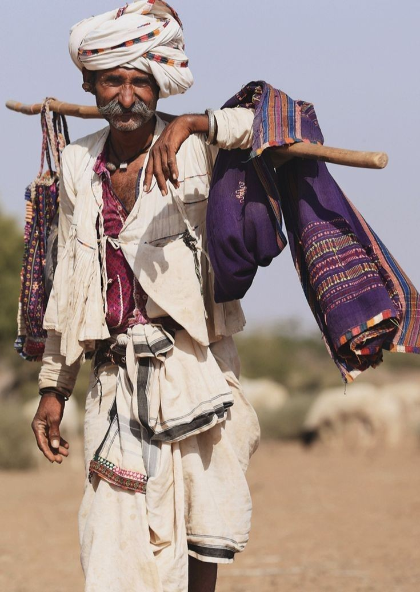
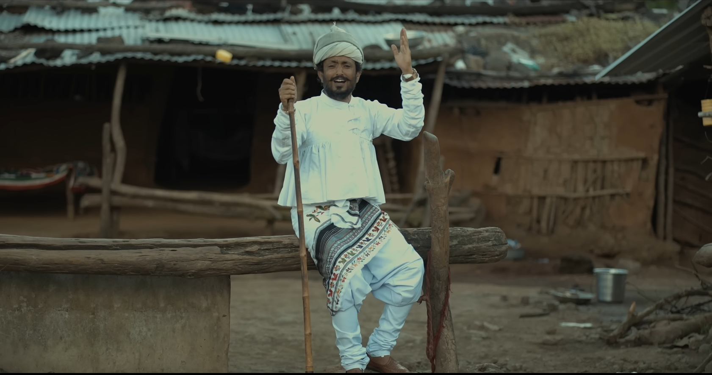

Why This Place and Culture
The decision to focus on this community was driven by their dual existence—deeply traditional yet subtly adaptive. They maintain their pastoral lifestyle, ritual practices, and strong kinship systems while also engaging with selective aspects of modern life. This tension between preservation and adaptation provides valuable insights for UX research, especially in understanding how tradition influences modern behavior.